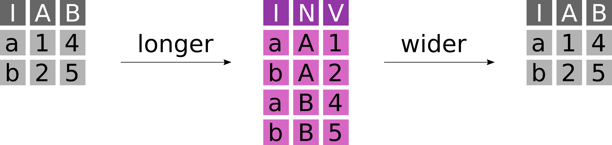
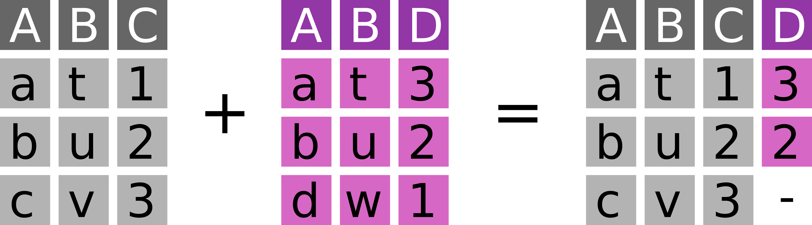
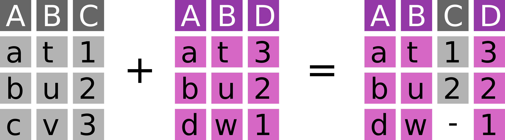
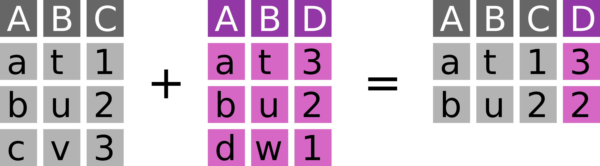
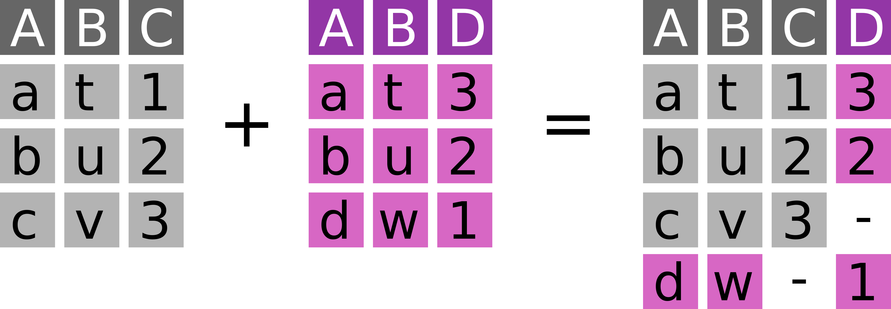

7 Introduction to R and the Tidyverse
This session is typically ran held in parallel to the Introduction to Python and Pandas. Participants of the summer schools chose which to attend based on their prior experience. We recommend this session if you have no experience with neither R nor Python.
For this chapter’s exercises, if not already performed, you will need to create the conda environment from the yml file in the following link (right click and save as to download), and once created, activate the environment with:
conda activate r-tidyverse7.1 Lecture
Lecture slides and video from the 2022 edition of the summer school.
PDF version of these slides can be downloaded from here.
7.2 The working environment
7.2.1 R, RStudio and the tidyverse
R is a fully featured programming language, but it excels as an environment for (statistical) data analysis (https://www.r-project.org)
RStudio is an integrated development environment (IDE) for R (and other languages): (https://www.rstudio.com/products/rstudio)
The tidyverse is a collection of R packages with well-designed and consistent interfaces for the main steps of data analysis: loading, transforming and plotting data (https://www.tidyverse.org)
- This introduction works with tidyverse ~v1.3.0
- We will learn about
readr,tibble,ggplot2,dplyr,magrittrandtidyr forcatswill be briefly mentionedpurrrandstringrare left out
7.3 Loading data into tibbles
7.3.1 Reading data with readr
With R we usually operate on data in our computer’s memory
The tidyverse provides the package
readrto read data from text files into the memoryreadrcan read from our file system or the internetIt provides functions to read data in almost any (text) format:
readr::read_csv() # .csv files readr::read_tsv() # .tsv files readr::read_delim() # tabular files with an arbitrary separator readr::read_fwf() # fixed width files readr::read_lines() # read linewise to parse yourselfreadrautomatically detects column types – but you can also define them manually
7.3.2 How does the interface of read_csv work
We can learn more about a function with
?. To open a help file:?readr::read_csvreadr::read_csvhas many options to specify how to read a text fileread_csv( file, # The path to the file we want to read col_names = TRUE, # Are there column names? col_types = NULL, # Which types do the columns have? NULL -> auto locale = default_locale(), # How is information encoded in this file? na = c("", "NA"), # Which values mean "no data" trim_ws = TRUE, # Should superfluous white-spaces be removed? skip = 0, # Skip X lines at the beginning of the file n_max = Inf, # Only read X lines skip_empty_rows = TRUE, # Should empty lines be ignored? comment = "", # Should comment lines be ignored? name_repair = "unique", # How should "broken" column names be fixed ... )
7.3.3 What does readr produce? The tibble
sample_table_path <- "/vol/volume/r-tidyverse/ancientmetagenome-hostassociated_samples.tsv"
sample_table_url <-
"https://raw.githubusercontent.com/SPAAM-community/AncientMetagenomeDir/b187df6ebd23dfeb42935fd5020cb615ead3f164/
ancientmetagenome-hostassociated/samples/ancientmetagenome-hostassociated_samples.tsv"samples <- readr::read_tsv(sample_table_url)- The
tibbleis a “data frame”, a tabular data structure with rows and columns - Unlike a simple array, each column can have another data type
print(samples, n = 3)7.3.4 How to look at a tibble
samples # Typing the name of an object will print it to the console
str(samples) # A structural overview of an object
summary(samples) # A human-readable summary of an object
View(samples) # RStudio's interactive data browserR provides a very flexible indexing operation for
data.frames andtibblessamples[1,1] # Access the first row and column samples[1,] # Access the first row samples[,1] # Access the first column samples[c(1,2,3),c(2,3,4)] # Access values from rows and columns samples[,-c(1,2)] # Remove the first two columns samples[,c("site_name", "material")] # Columns can be selected by nametibbles are mutable data structures, so their content can be overwrittensamples[1,1] <- "Cheesecake2015" # replace the first value in the first column
7.4 Plotting data in tibbles
7.4.1 ggplot2 and the “grammar of graphics”
ggplot2offers an unusual, but powerful and logical interfaceThe following example describes a stacked bar chart
library(ggplot2) # Loading a library to use its functions without :: ggplot( # Every plot starts with a call to the ggplot() function data = samples # This function can also take the input tibble ) + # The plot consists of functions linked with + geom_bar( # "geoms" define the plot layers we want to draw mapping = aes( # The aes() function maps variables to visual properties x = publication_year, # publication_year -> x-axis fill = community_type # community_type -> fill color ) )geom_*: data + geometry (bars) + statistical transformation (sum)
7.4.2 ggplot2 and the “grammar of graphics”
This is the plot described above: number of samples per community type through time
ggplot(samples) + geom_bar(aes(x = publication_year, fill = community_type))
7.4.3 ggplot2 features many geoms
 (){width=55%}
(){width=55%}
- RStudio shares helpful cheatsheets for the tidyverse and beyond: https://www.rstudio.com/resources/cheatsheets
7.4.4 scales control the behaviour of visual elements
Another plot: Boxplots of sample age through time
ggplot(samples) + geom_boxplot(aes(x = as.factor(publication_year), y = sample_age))This is not well readable, because extreme outliers dictate the scale
7.4.5 scales control the behaviour of visual elements
We can change the scale of different visual elements - e.g. the y-axis
ggplot(samples) + geom_boxplot(aes(x = as.factor(publication_year), y = sample_age)) + scale_y_log10()The log-scale improves readability
7.4.6 scales control the behaviour of visual elements
(Fill) color is a visual element of the plot and its scaling can be adjusted
ggplot(samples) + geom_boxplot(aes(x = as.factor(publication_year), y = sample_age, fill = as.factor(publication_year))) + scale_y_log10() + scale_fill_viridis_d(option = "C")
7.4.7 Defining plot matrices via facets
Splitting up the plot by categories into facets is another way to visualize more variables at once
ggplot(samples) + geom_count(aes(x = as.factor(publication_year), y = material)) + facet_wrap(~archive)Unfortunately the x-axis became unreadable
7.4.8 Setting purely aesthetic settings with theme
Aesthetic changes like this can be applied as part of the
themeggplot(samples) + geom_count(aes(x = as.factor(publication_year), y = material)) + facet_wrap(~archive) + theme(axis.text.x = element_text(angle = 45, hjust = 1, vjust = 1))
7.4.9 Exercise 1
Look at the
mtcarsdataset and read up on the meaning of its variablesVisualize the relationship between Gross horsepower and 1/4 mile time
Integrate the Number of cylinders into your plot
7.4.10 Possible solutions 1
Look at the
mtcarsdataset and read up on the meaning of its variables?mtcarsVisualize the relationship between Gross horsepower and 1/4 mile time
ggplot(mtcars) + geom_point(aes(x = hp, y = qsec))Integrate the Number of cylinders into your plot
ggplot(mtcars) + geom_point(aes(x = hp, y = qsec, color = as.factor(cyl)))
7.5 Conditional queries on tibbles
7.5.1 Selecting columns and filtering rows with select and filter
The
dplyrpackage includes powerful functions to subset data in tibbles based on conditionsdplyr::selectallows to select columnsdplyr::select(samples, project_name, sample_age) # reduce to two columns dplyr::select(samples, -project_name, -sample_age) # remove two columnsdplyr::filterallows for conditional filtering of rowsdplyr::filter(samples, publication_year == 2014) # samples published in 2014 dplyr::filter(samples, publication_year == 2014 | publication_year == 2018) # samples from 2015 OR 2018 dplyr::filter(samples, publication_year %in% c(2014, 2018)) # match operator: %in% dplyr::filter(samples, sample_host == "Homo sapiens" & community_type == "oral") # oral samples from modern humans
7.5.2 Chaining functions together with the pipe %>%
The pipe
%>%in themagrittrpackage is a clever infix operator to chain data and operationslibrary(magrittr) samples %>% dplyr::filter(publication_year == 2014)It forwards the LHS as the first argument of the function appearing on the RHS
That allows for sequences of functions (“tidyverse style”)
samples %>% dplyr::select(sample_host, community_type) %>% dplyr::filter(sample_host == "Homo sapiens" & community_type == "oral") %>% nrow() # count the rowsmagrittralso offers some more operators, among which the extraction%$%is particularly usefulsamples %>% dplyr::filter(material == "tooth") %$% sample_age %>% # extract the sample_age column as a vector max() # get the maximum of said vector
7.5.3 Summary statistics in base R
Summarising and counting data is indispensable and R offers all operations you would expect in its
basepackagenrow(samples) # number of rows in a tibble length(samples$site_name) # length/size of a vector unique(samples$material) # unique elements of a vector min(samples$sample_age) # minimum max(samples$sample_age) # maximum mean(samples$sample_age) # mean median(samples$sample_age) # median var(samples$sample_age) # variance sd(samples$sample_age) # standard deviation quantile(samples$sample_age, probs = 0.75) # sample quantiles for the given probsmany of these functions can ignore missing values with an option
na.rm = TRUE
7.5.4 Group-wise summaries with group_by and summarise
These summary statistics are particular useful when applied to conditional subsets of a dataset
dplyrallows such summary operations with a combination ofgroup_byandsummarisesamples %>% dplyr::group_by(material) %>% # group the tibble by the material column dplyr::summarise( min_age = min(sample_age), # a new column: min age for each group median_age = median(sample_age), # a new column: median age for each group max_age = max(sample_age) # a new column: max age for each group )grouping can be applied across multiple columns
samples %>% dplyr::group_by(material, sample_host) %>% # group by material and host dplyr::summarise( n = dplyr::n(), # a new column: number of samples for each group .groups = "drop" # drop the grouping after this summary operation )
7.5.5 Sorting and slicing tibbles with arrange and slice
dplyrallows toarrangetibbles by one or multiple columnssamples %>% dplyr::arrange(publication_year) # sort by publication year samples %>% dplyr::arrange(publication_year, sample_age) # ... and sample age samples %>% dplyr::arrange(dplyr::desc(sample_age)) # sort descending on sample ageSorting also works within groups and can be paired with
sliceto extract extreme values per groupsamples %>% dplyr::group_by(publication_year) %>% # group by publication year dplyr::arrange(dplyr::desc(sample_age)) %>% # sort by age within (!) groups dplyr::slice_head(n = 2) %>% # keep the first two samples per group dplyr::ungroup() # remove the still lingering groupingSlicing is also the relevant operation to take random samples from the observations in a tibble
samples %>% dplyr::slice_sample(n = 20)
7.5.6 Exercise 2
Determine the number of cars with four forward gears (
gear) in themtcarsdatasetDetermine the mean 1/4 mile time (
qsec) per Number of cylinders (cyl) groupIdentify the least efficient cars for both transmission types (
am)
7.5.7 Possible solutions 2
Determine the number of cars with four forward gears (
gear) in themtcarsdatasetmtcars %>% dplyr::filter(gear == 4) %>% nrow()Determine the mean 1/4 mile time (
qsec) per Number of cylinders (cyl) groupmtcars %>% dplyr::group_by(cyl) %>% dplyr::summarise(qsec_mean = mean(qsec))Identify the least efficient cars for both transmission types (
am)#mtcars3 <- tibble::rownames_to_column(mtcars, var = "car") %>% tibble::as_tibble() mtcars %>% dplyr::group_by(am) %>% dplyr::arrange(mpg) %>% dplyr::slice_head()
7.6 Transforming and manipulating tibbles
7.6.1 Renaming and reordering columns and values with rename, relocate and recode
Columns in tibbles can be renamed with
dplyr::renameand reordered withdplyr::relocatesamples %>% dplyr::rename(country = geo_loc_name) # rename a column samples %>% dplyr::relocate(site_name, .before = project_name) # reorder columnsValues in columns can also be changed with
dplyr::recodesamples$sample_host %>% dplyr::recode(`Homo sapiens` = "modern human")R supports explicitly ordinal data with
factors, which can be reordered as wellfactors can be handeld more easily with theforcatspackageggplot(samples) + geom_bar(aes(x = community_type)) # bars are alphabetically ordered sa2 <- samples sa2$cto <- forcats::fct_reorder(sa2$community_type, sa2$community_type, length) # fct_reorder: reorder the input factor by a summary statistic on an other vector ggplot(sa2) + geom_bar(aes(x = community_type)) # bars are ordered by size
7.6.2 Adding columns to tibbles with mutate and transmute
A common application of data manipulation is adding derived columns.
dplyroffers that withmutatesamples %>% dplyr::mutate( # add a column that archive_summary = paste0(archive, ": ", archive_accession) # combines two other ) %$% archive_summary # columnsdplyr::transmuteremoves all columns but the newly created onessamples %>% dplyr::transmute( sample_name = tolower(sample_name), # overwrite this columns publication_doi # select this column )tibble::add_columnbehaves asdplyr::mutate, but gives more control over column positionsamples %>% tibble::add_column(., id = 1:nrow(.), .before = "project_name")
7.6.3 Conditional operations with ifelse and case_when
ifelseallows to implement conditionalmutateoperations, that consider information from other columns, but that gets cumbersome easilysamples %>% dplyr::mutate(hemi = ifelse(latitude >= 0, "North", "South")) %$% hemi samples %>% dplyr::mutate( hemi = ifelse(is.na(latitude), "unknown", ifelse(latitude >= 0, "North", "South")) ) %$% hemidplyr::case_whenis a much more readable solution for this applicationsamples %>% dplyr::mutate( hemi = dplyr::case_when( latitude >= 0 ~ "North", latitude < 0 ~ "South", TRUE ~ "unknown" # TRUE catches all remaining cases ) ) %$% hemi
7.6.4 Long and wide data formats
- For different applications or to simplify certain analysis or plotting operations data often has to be transformed from a wide to a long format or vice versa

- A table in wide format has N key columns and N value columns
- A table in long format has N key columns, one descriptor column and one value column
7.6.5 A wide dataset
carsales <- tibble::tribble(
~brand, ~`2014`, ~`2015`, ~`2016`, ~`2017`,
"BMW", 20, 25, 30, 45,
"VW", 67, 40, 120, 55
)
carsales- Wide format becomes a problem, when the columns are semantically identical. This dataset is in wide format and we can not easily plot it
- We generally prefer data in long format, although it is more verbose with more duplication. “Long” format data is more “tidy”
7.6.6 Making a wide dataset long with pivot_longer
carsales_long <- carsales %>% tidyr::pivot_longer(
cols = tidyselect::num_range("", range = 2014:2017), # set of columns to transform
names_to = "year", # the name of the descriptor column we want
names_transform = as.integer, # a transformation function to apply to the names
values_to = "sales" # the name of the value column we want
)
carsales_long7.6.7 Making a long dataset wide with pivot_wider
carsales_wide <- carsales_long %>% tidyr::pivot_wider(
id_cols = "brand", # the set of id columns that should not be changed
names_from = year, # the descriptor column with the names of the new columns
values_from = sales # the value column from which the values should be extracted
)
carsales_wide- Applications of wide datasets are adjacency matrices to represent graphs, covariance matrices or other pairwise statistics
- When data gets big, then wide formats can be significantly more efficient (e.g. for spatial data)
7.6.8 Exercise 3
Move the column
gearto the first position of the mtcars datasetMake a new dataset
mtcars2with the columnmpgand an additional columnam_v, which encodes the transmission type (am) as either"manual"or"automatic"Count the number of cars per transmission type (
am_v) and number of gears (gear). Then transform the result to a wide format, with one column per transmission type.
7.6.9 Possible solutions 3
Move the column
gearto the first position of the mtcars datasetmtcars %>% dplyr::relocate(gear, .before = mpg)Make a new dataset
mtcars2with the columngearand an additional columnam_v, which encodes the transmission type (am) as either"manual"or"automatic"mtcars2 <- mtcars %>% dplyr::mutate( gear, am_v = dplyr::case_when(am == 0 ~ "automatic", am == 1 ~ "manual") )Count the number of cars in
mtcars2per transmission type (am_v) and number of gears (gear). Then transform the result to a wide format, with one column per transmission type.mtcars2 %>% dplyr::group_by(am_v, gear) %>% dplyr::tally() %>% tidyr::pivot_wider(names_from = am_v, values_from = n)
7.7 Combining tibbles with join operations
7.7.1 Types of joins
Joins combine two datasets x and y based on key columns
- Mutating joins add columns from one dataset to the other
- Left join: Take observations from x and add fitting information from y
- Right join: Take observations from y and add fitting information from x
- Inner join: Join the overlapping observations from x and y
- Full join: Join all observations from x and y, even if information is missing
- Filtering joins remove observations from x based on their presence in y
- Semi join: Keep every observation in x that is in y
- Anti join: Keep every observation in x that is not in y
7.7.2 A second dataset
library_table_path <- "/vol/volume/r-tidyverse/ancientmetagenome-hostassociated_libraries.tsv"
library_table_url <-
"https://raw.githubusercontent.com/SPAAM-community/AncientMetagenomeDir/b187df6ebd23dfeb42935fd5020cb615ead3f164/
ancientmetagenome-hostassociated/libraries/ancientmetagenome-hostassociated_libraries.tsv"
libraries <- readr::read_tsv(library_table_url)
print(libraries, n = 3)7.7.3 Meaningful subsets
samsub <- samples %>% dplyr::select(project_name, sample_name, sample_age)
libsub <- libraries %>% dplyr::select(project_name, sample_name, library_name, read_count)print(samsub, n = 3)
print(libsub, n = 3)7.7.4 Left join
Take observations from x and add fitting information from y

left <- dplyr::left_join(
x = samsub, # 1060 observations
y = libsub, # 1657 observations
by = c("project_name", "sample_name") # the key columns by which to join
)
print(left, n = 1)- Left joins are the most common join operation: Add information from another dataset
7.7.5 Right join
Take observations from y and add fitting information from x

right <- dplyr::right_join(
x = samsub, # 1060 observations
y = libsub, # 1657 observations
by = c("project_name", "sample_name")
)
print(right, n = 1)- Right joins are almost identical to left joins – only x and y have reversed roles
7.7.6 Inner join
Join the overlapping observations from x and y

inner <- dplyr::inner_join(
x = samsub, # 1060 observations
y = libsub, # 1657 observations
by = c("project_name", "sample_name")
)
print(inner, n = 1)- Inner joins are a fast and easy way to check, to which degree two dataset overlap
7.7.7 Full join
Join all observations from x and y, even if information is missing

full <- dplyr::full_join(
x = samsub, # 1060 observations
y = libsub, # 1657 observations
by = c("project_name", "sample_name")
)
print(full, n = 1)- Full joins allow to preserve every bit of information
7.7.8 Semi join
Keep every observation in x that is in y

semi <- dplyr::semi_join(
x = samsub, # 1060 observations
y = libsub, # 1657 observations
by = c("project_name", "sample_name")
)print(semi, n = 1)- Semi joins are underused operations to filter datasets
7.7.9 Anti join
Keep every observation in x that is not in y

anti <- dplyr::anti_join(
x = samsub, # 1060 observations
y = libsub, # 1657 observations
by = c("project_name", "sample_name")
)print(anti, n = 1)- Anti joins allow to quickly specify incomplete datasets and missing information
7.7.10 Exercise 4
Consider the following additional dataset:
gear_opinions <- tibble::tibble(gear = c(3, 5), opinion = c("boring", "wow"))Add my opinions about gears to the
mtcarsdatasetRemove all cars from the dataset for which I don’t have an opinion
7.7.11 Possible Solutions 4
Add my opinions about gears to the
mtcarsdatasetdplyr::left_join(mtcars, gear_opinions, by = "gear")Remove all cars from the dataset for which I don’t have an opinion
dplyr::anti_join(mtcars, gear_opinions, by = "gear")